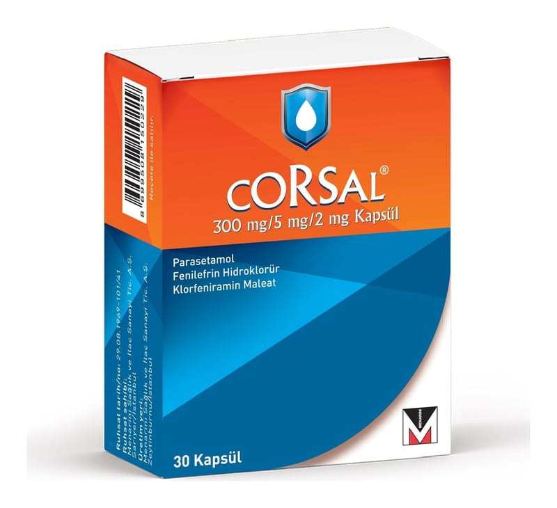

Corsal 300 mg/5 mg/2 mg Kapsül, 30 Adet

Ne için kullanılır
KT · Bölüm 1• CORSAL, kapsül formunda bir ilaçtır. Turuncu kapak ve gövdeli her bir kapsül, beyaz kokusuz toz içerir. • CORSAL, bir ağrı kesici ve ateş düşürücü (parasetamol), bir antihistaminik (klorfeniramin maleat) ve mukozanın şişkinliğini azaltarak tıkanıklıkları gideren bir dekonjestan (fenilefrin hidroklorür) olmak üzere üç etkin madde içeren kombine bir ilaçtır. • CORSAL, sığır kaynaklı jelatin içermektedir. • CORSAL, 30 kapsül içeren blister ambalajlarda, orijinal kutuda kullanıma sunulmaktadır. • CORSAL grip ve soğuk algınlığına bağlı baş ağrısı, kas ve eklem ağrıları, ateş ve eşlik eden titreme, burun ve burun boşluklarının (sinüs) tıkanıklığı, burun akıntısı ve hapşırık gibi belirtilerini azaltır.